This guide provides instructions for installation, help on getting started and extensive documentation of features. It is recommended you read it thoroughly to fully leverage the EXO's theme's capabilities. Please also make sure to check out our Video Tutorials as they explain everything covered in here in greater depth. We hope you enjoy building with EXO as much as we enjoyed developing it and continue to develop with new features!
Support
The team at CMSSuperheroes are always happy to help you with any questions or recommendations you have about the EXO theme.
If you need any help or support please contact us through the ThemeForest Messaging system or direct at support@cmssuperheroes.com
First Steps
If you are more of visual learner and would prefer to watch our video tutorials or if you're stuck understanding any aspects in the EXO theme, please check out our Video Series. (Please note some of the videos in this documentation are from our 'Spectrum' Theme, but the exact same principles apply).
(Through each step of this document we have also added the relevant video tutorials).
Installing the Theme
Installing Wordpress
Note: Before beginning the installation and configuring of your new theme, you must first have WordPress already installed on a server
You can watch this video tutorial on how to install Wordpress.
Installing the EXO Theme
Once you have setup a copy of WordPress, there are two ways you can go about installing the theme:
FTP Upload.
Unzip the download and upload the theme directory /exo-theme/ into your WordPress themes directory /wp-content/themes/.
WordPress Upload.
This is definitely the easier route for most. Simply navigate to Appearance > Add New Themes > Upload. Click the 'browse' button and locate the still zipped theme folder. The theme will be uploaded and installed in a matter of seconds.
After you have installed the theme successfully, you can optionally import the supplied dummy data in order to get a feel for things. If you would rather skip that and continue setting up your theme, please continue below. If you're interested in importing the data, click here to jump to the details.
Installing Plugins & Demo Content
Once you have Wordpress and the EXO theme installed you have two options on how to create your project, you can either install the plugins and demo content which we have created for you or you can just install the plugins and start to build your pages from the ground up.
The video tutorial below will show you how to install the plugins and demo content
Theme Options
The options panel is home to all of the theme's extensive configuration options. To view the panel, navigate to 'WP EXO's' in the left-hand menu. Here you have the ability to alter many core aspects that make up how your theme looks and behaves. Any of the options that have some ambiguity to them conviently have descriptions to explain their purpose.
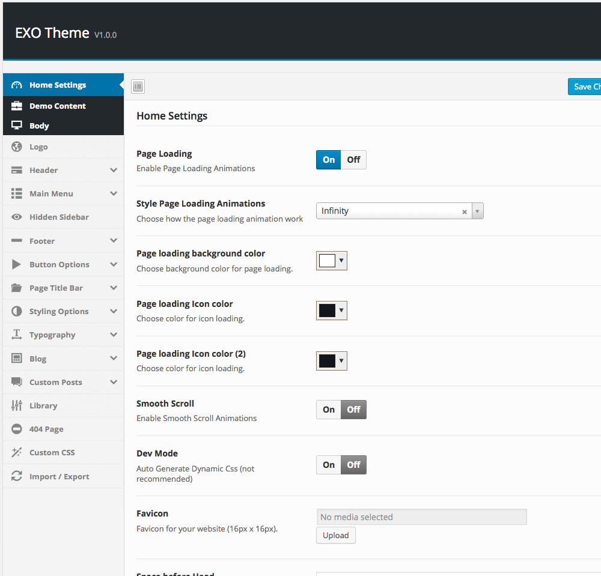
Creating Your First Pages
This video tutorial will show you how to create and build a page from the very begining. Learn how to use the angled rows and start to bring your EXO theme to life. We will also show you how to use the Team carousel and posts, progress bars, process element and the text editor.
(Please note this video tutorial is from our Spectrum theme, but the exact same principals apply)
Editing & Creating Content
(Please note the videos below are from our Spectrum theme, but the exact same principals apply)
Changing Your Logo
This video tutorial will show you how to change the logo on your new EXO's install
Adding & Editing Client Logos
This video tutorial will show you how to edit the demo content for the client posts and logos
Controlling Mouse Hover Effect & Images
This video tutorial will show you how to edit the demo content on the Visual Composer Rows that use the Mouse Hover Parallax effect
Creating Angled Rows
This video tutorial will show you how to create angled rows.
Additional Plugins
Revolution Slider
Create a responsive (mobile friendly) or fullwidth slider with must-see-effects and meanwhile keep or build your SEO optimization (all content always readable for search engines). See the heaps of custom transitions/animations for each object on the page!
Customize this slider with our convenient drag & drop backend to your very needs.
This plugin features tons of unique transition effects, an image preloader, video embedding, autoplay that stops on user interaction and lots of easy to set options to create your own effects.
Essential Grid is an amazing plugin for Wordpress developed by 'Theme Punch' that comes FREE as part of the EXO's Theme.
Within this documentation we have covered everything you need to know about using the plugin with the 'EXO's' theme.
We have also included all the documentation supplied by 'ThemePunch'.
If you need premium support for this plugin you will need to purchase the plugin on CodeCanyon, you will then get a 'Purchase Registration Code'. You can then create your account on the 'ThemePunch Support Website'.
'Essential Grid' is an all-purpose grid building solution for WordPress that allows you to display different kinds of content in a highly customizable grid. Possible applications range from portfolios, blogs, galleries, services, product sliders, testimonials and anything else you can imagine. With it's various supported media types like images, youtube & vimeo videos, html5 self- hosted videos and even iframe content.
Using Essential Grid
We have created a video tutorial to show you how easy you can create stunning portfolios and blogs within your theme, using 'Essential Grid'. (Please note this video is from our Pro Business theme, but the exact same principals apply)
Full Essential Grid Documentation by Theme Punch
As part of this documentation, our friends over at ThemePunch have kindley allowed us to include their full documentation.
Please see below for the detailed documentation:
(If you need premium support for this plugin you will need to purchase the plugin on CodeCanyon, you will then get a 'Purchase Registration Code'. You can then create your account on the 'ThemePunch Support Website'.)
Creating your first Grid
To create your first Essential Grid, head over to the plugin's main admin page (WP Main Menu -> Ess. Grid). Then click the blue button titled "Create New Ess. Grid":
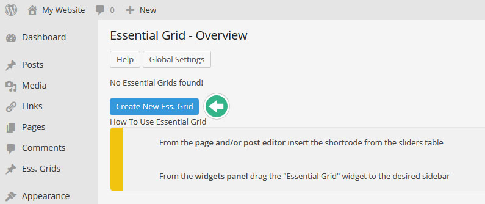
Naming
Next, give your new grid a "Title" and an "Alias":
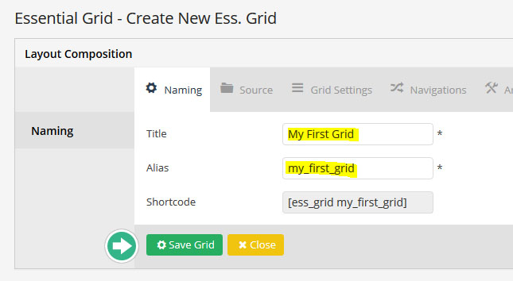
The "Title" can be anything you choose to help you organize your grids (if you choose to create more than one).
The "Alias" is the keyword that will be used in the grid's "shortcode". A general rule for "Alias" names is to avoid using special characters, and to keep things nice and organized, it's also helpful to avoid using uppercase letters and spaces between letters.
Source
Next, click the "Source Tab", and choose either "Post, Pages, Custom Posts", or "Gallery":
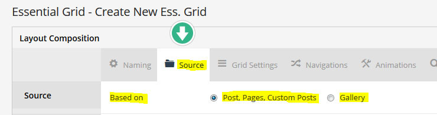
Choose "Post, Pages, Custom Posts" if you want your Grid's content to be pulled from one of those sources. Choose "Gallery" if you wish to build a custom grid from scratch that isn't based on your site's pages or posts.
If you've chosen "Gallery", click the green button titled "Save Grid" and skip over the next step.
If you've chosen "Post, Pages, Custom Posts", select a "Post Type" from the list:
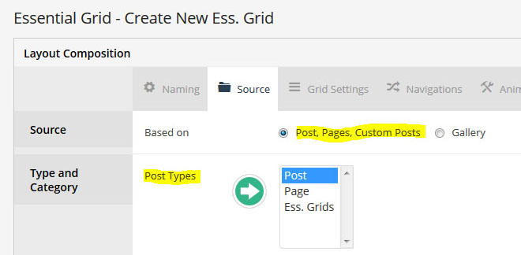
If you've chosen "Post", select a post category:
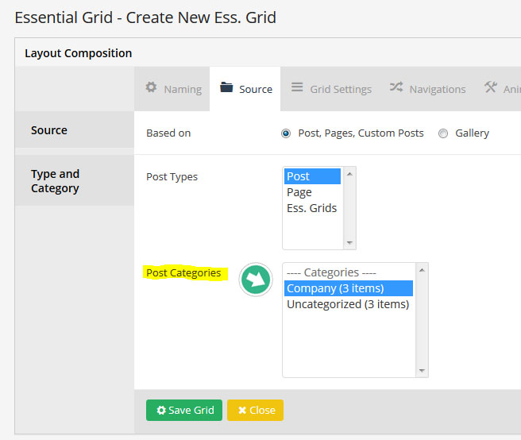
If you wish to include more than one category, hold down the "Ctrl" key to select an additional category:
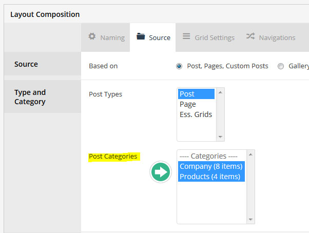
If you've chosen "Page" for your "Post Types" option, select the "+" icon in the "Select Pages" section:
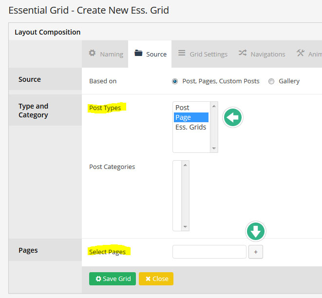
Next you'll see a popup modal that where you can select the pages you wish to include in the grid:
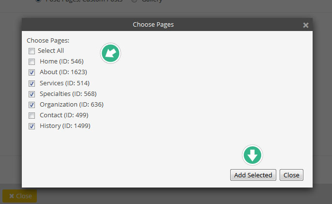
And then you'll see your chosen pages listed. If you decide you want to delete a page from the list, click the "trash can" icon next to the listed page.
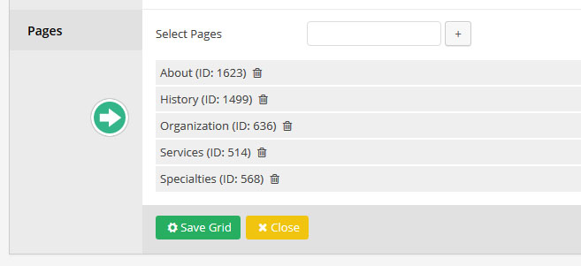
If you've chosen "Ess. Grids" for your "Source Option", this is a Custom Post Type that's automatically created when you install and activate the Essential Grid plugin.
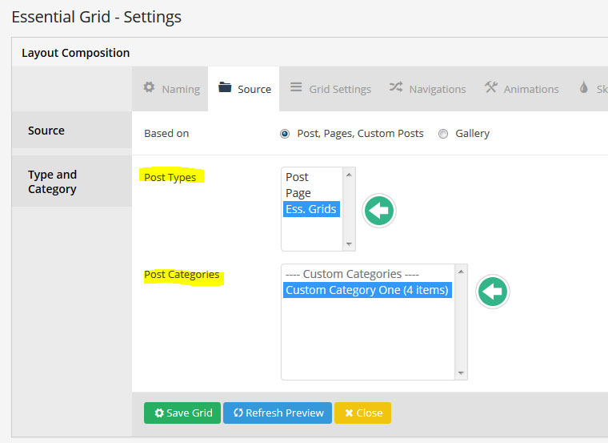
This Custom Post Type will represent the posts from the "Ess. Grids" menu item in your WordPress main menu. We'll cover creating custom posts a bit later when we start to setup our grid items.
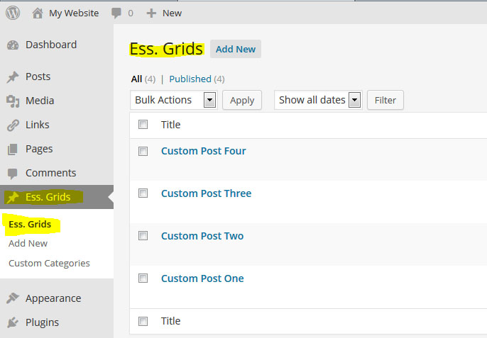
Once you're finished choosing your "Source Option, click the green button titled "Save Grid", and now you've offically created your first Essential Grid :)
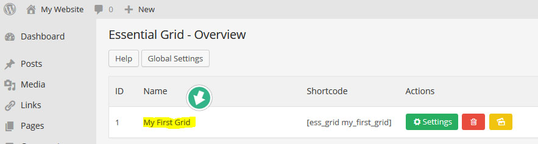
Media Source
The "Media Source" is found inside the "Source" section of your first grid:
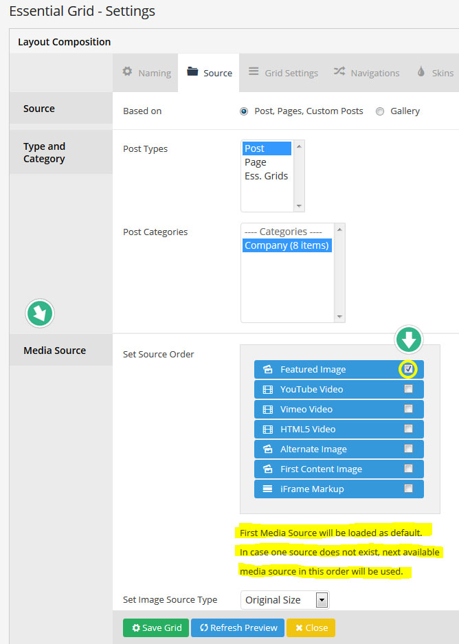
As you can see, there are several options you can choose from. We'll be working with the "Featured Image" for now. We'll cover this as well as the other media source options in more detail in the Essential Grid Items section of this documentation.
Set Image Source Type
Whenever you upload an image to your WordPress site, WordPress automatically creates multiple versions of the image, based on the values in your WordPress "Media Settings":
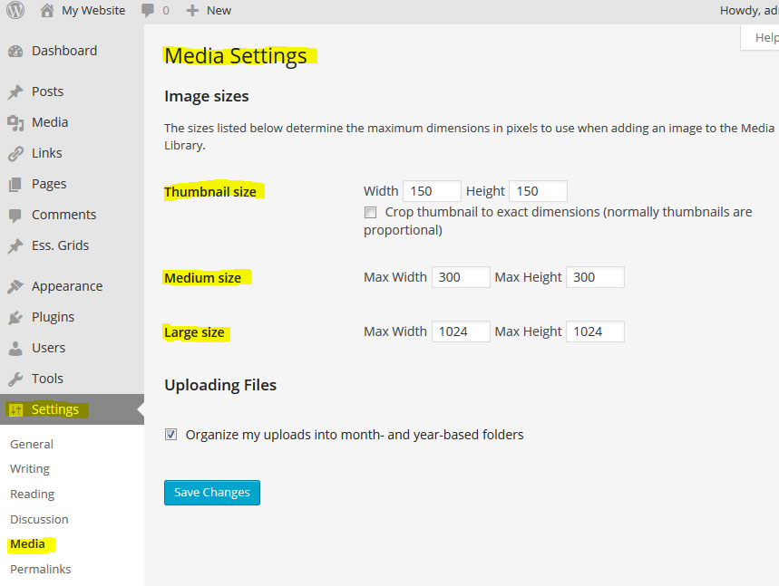
Depending on your Grid, it may be more efficient to load in the "Medium" or "Thumbnail" version for your Grid items as opposed to the image's "Original" or "Large" version. Nevertheless, there are four options you can choose for your "Image Source Type", and they'll apply to both the "Featured Image" and the "First Content Image" options shown in the following screenshot:
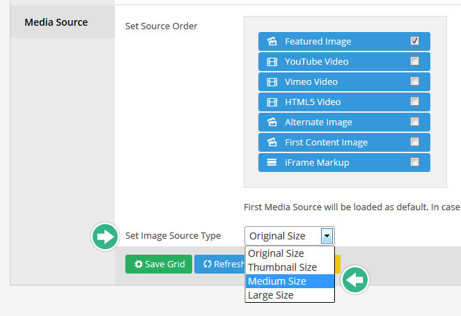
General Grid Settings
Now that we've created a new "Essential Grid", we're ready to get started adjusting the look of the grid. For this example, I've chosen "Posts" as the "Source Type", and have created 8 posts, all with a "Featured Image" and some dummy text.
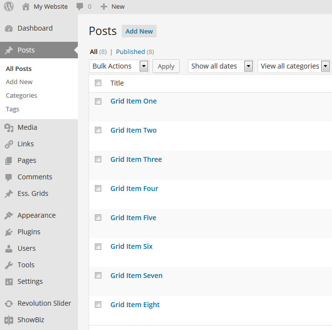
Of course, these posts can be titled anything. Here's what each one looks like for now:
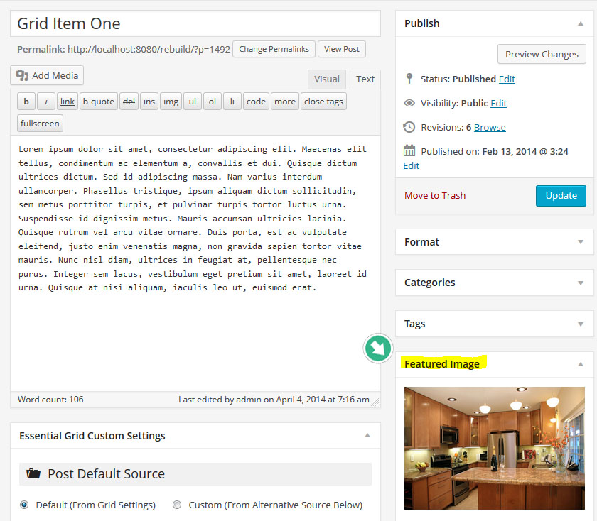
Later on, we'll discuss customizing the content for a grid item based on a post. But for now, to start customizing the grid itself, all we need are some posts that all have a "Featured Image", and some dummy text as shown in the screenshot above.
If you've been clicking around the Grid's admin, you've probably noticed that most of the options have tooltips. These tooltips will help you navigate through the large array of settings Essential Grid has to offer.
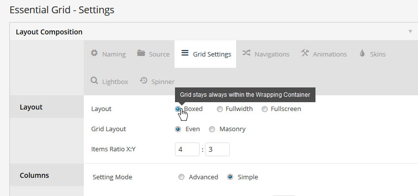
And if you scroll down to the bottom of the "Grid Settings" page, you should now see a preview of your first Essential Grid:
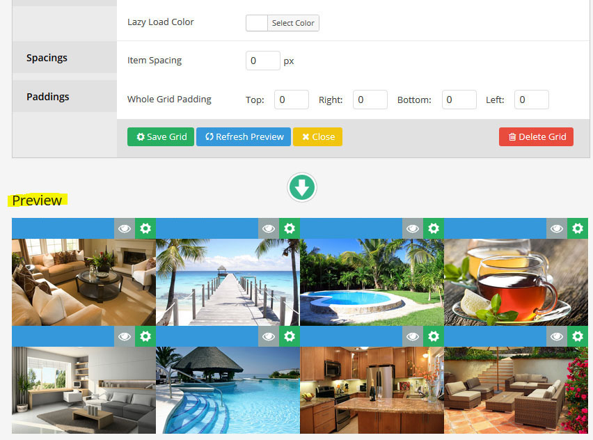
Note: You'll notice that each Grid item has its own toolbar. These options will be covered in detail in the Grid Item Options section.
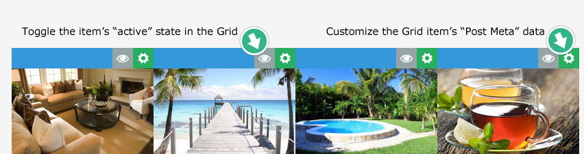
Now we can start adjusting the settings on the page, and after each adjustment, clicking the blue "Refresh Preview" button will then reflect the settings change in the preview:
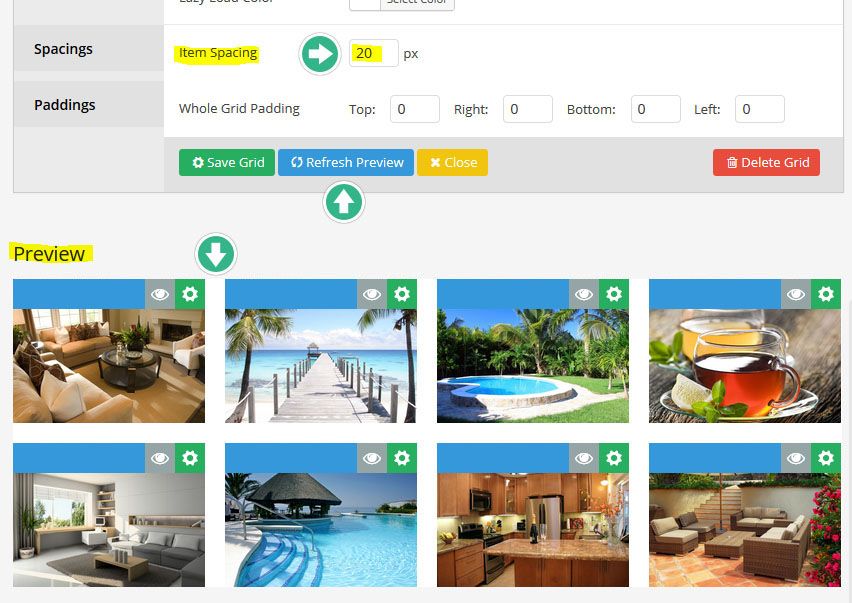
Note: It's always good practice to frequently save your Grid throughout the customization process:
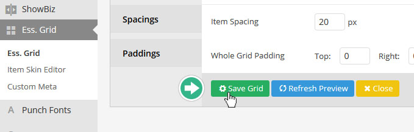
Some settings, such as "Smart Loading -> Lazy Load", are best previewed when the Grid is live on a page. But because we're still setting up our grid, create an unpublished "test" page where for your live preview. Skip over to the Adding the Grid to a Web Page section if you want to quicky do that, and then come back here to continue learning about the different Essential Grid Settings :)
Ok, got your previews setup? Great! Let's discuss the different "Grid Settings" and what they do.
Layout
Layout -> Boxed
Choose this setting if you want the Grid to always fit inside your site. This option is usually best for most sites, and since Essential Grid is "responsive" by default, if your site happens to be "reponsive", the grid will always resize along with your site.
Layout -> Fullwidth
Choose this setting if you want the Grid to span acrosss the entire screen's width, no matter what the screen size. Keep in mind that even though your site's template may be inside a "boxed" container, this option will essentially force the grid to "break out" of the template's boxed container.
Layout -> Fullscreen
Choose this option if you want the Grid to consume the entire screen when the page first loads. When the Grid is displayed this way, any content placed below it will automatically be pushed off the screen, forcing the user to scroll the page to view the rest of your page's content.
When this option is chosen, you'll see a new option apear directly underneath that's titled "Offset Container". Because the Grid is going to consume the entire screen, you may want to account for other elements on the page that will also be visible, such as your theme's "header" , "nav" or "footer". If so, enter these elements into the "Offset Container" field:
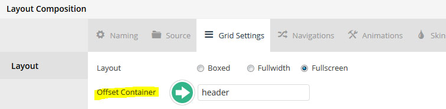
The "Offset Container" should be anything that can be used as a "jQuery selector". For example, if you want the Grid to account for your site's navigation menu, the "Offset Container" could be the navigation element's tag name (if unique such as "nav"), or it could be the navigation element's "ID", or its "class" name. Here are some examples:
nav - tag name
#navigation - ID
.navigation - class
Grid Layout -> Even
Chose this option for a perfectly symetrical grid, where items will always be the same size as each other.
Grid Layout -> Masonry
Essentially a "non-symetrical" grid, where the width of thue items will always be the same, but the height of each item will vary based on the size of the "Media Source" (set in the "Source" section).
Columns
Quick Note:
"Columns" refer to the amount of items that will be displayed horizontally next to each other side by side. "Rows" refer to sets of "columns" stacked vertically on top of one another. So for example, if your grid were 5x3, 5 would equal the number of columns, and 3 would equal the number of rows.
The "Columns" section will allow you to designate a specific column number based on the current screen width. If you're rather just use the default sizes, choose "Simple", and adjust the number of columns you'd like your Grid to display based on each listed size:
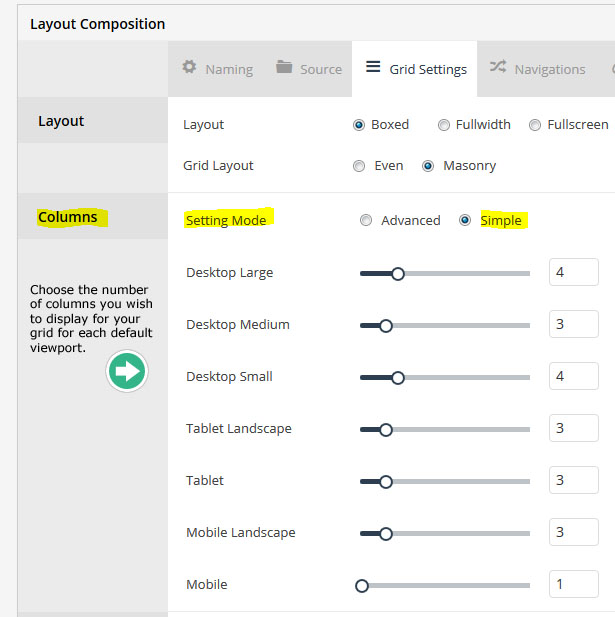
If you'd like more control, choose the "Advanced" option, and you'll be able to designate a specific width for each viewport:
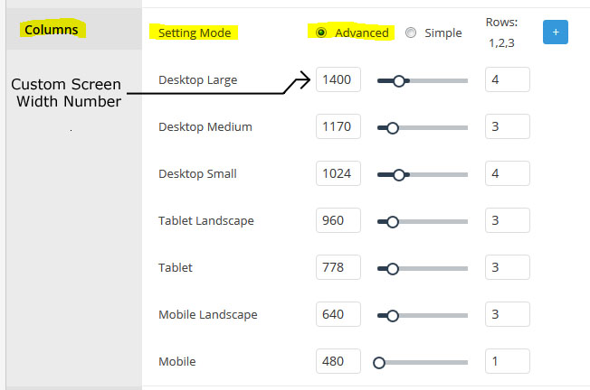
Using the "Advanced" option, you'll also notice a new option toward the top right, that will allow you to set different column numbers based on a different set of rows. Clicking the blue "+" button will add another set of row options you can add to your advanced columns settings:
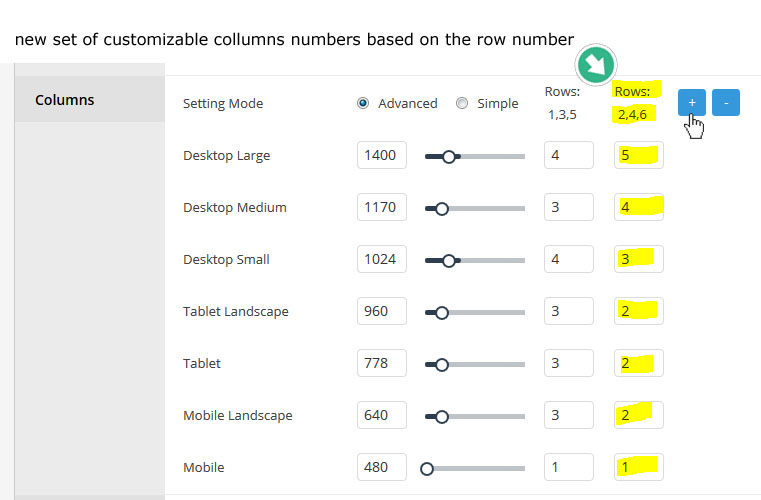
And you can add even more sets of rows settings by clicking the blue "+" button more than once. This allows you to get creative in the way your grid is displayed. In the screenshot below, notice how I've set the same number of columns for the odd numbered sets (Rows 1-5-9 and 3-7-11), and the same number of columns for the even numbered sets (Rows 2-6-10 and 4-8-12).
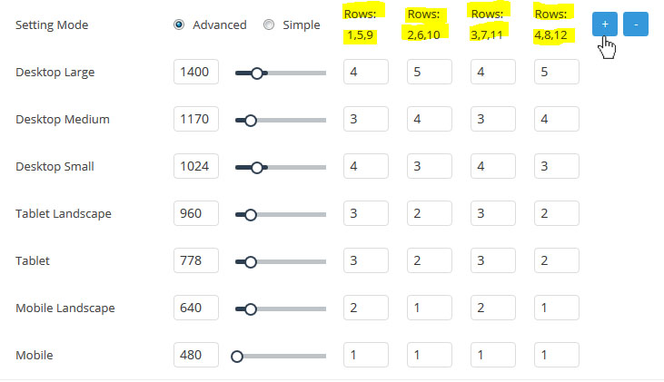
Here's an example of what these jagged numbered rows would look like in a "Tablet Landscape" viewport. Notice how the images resize per row based on the number of columns to fit the available width.
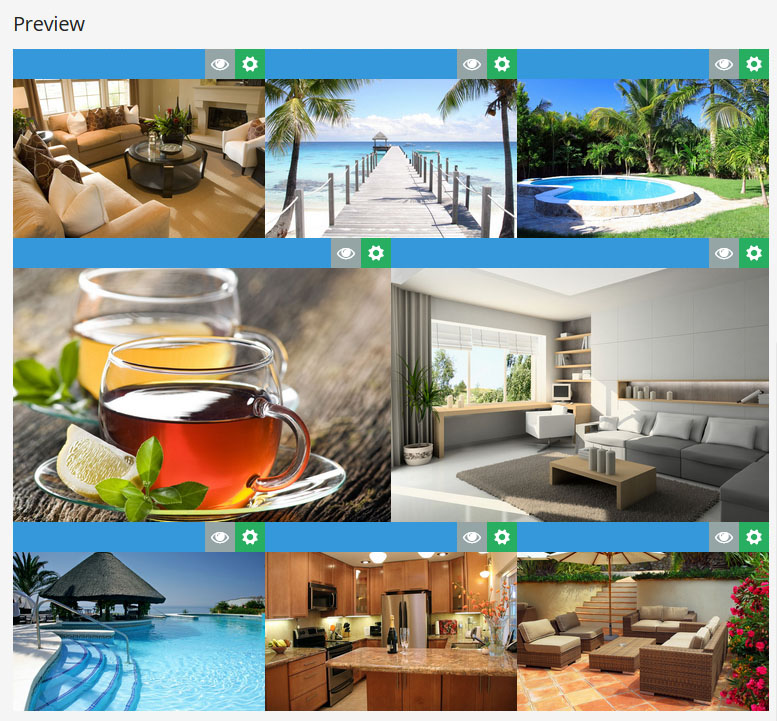
Lastly, if you add a new "Set" or rows, and what to delete it, click the blue "-" (minus) button and that will delete the last row in the set.
Pagination
Quick Note:
"Pagination -> Enable" means your new items will be loaded in traditional WordPress "Pagination" format (with numbered buttons that toggle new sets of items).
"Pagination -> Disable" allows for two options. The first is to load in additional Grid items with a traditional "Load More" button, and the second option is an "Infinite Scroll" option, which will load in new items as the user scrolls to the bottom of the Grid (no navigation buttons are used for the "Infinite Scroll" option).
Pagination -> Enable
If your Grid happens to include a large number of items, you may not want to show them all at once when the page first loads. This is where the "Pagination" option comes in handy. Choosing "Enable" will only show the "Max Visible Rows" set by you, and then if your Grid has more items, they'll be shown when your website visitor clicks the Pagination numbered buttons.
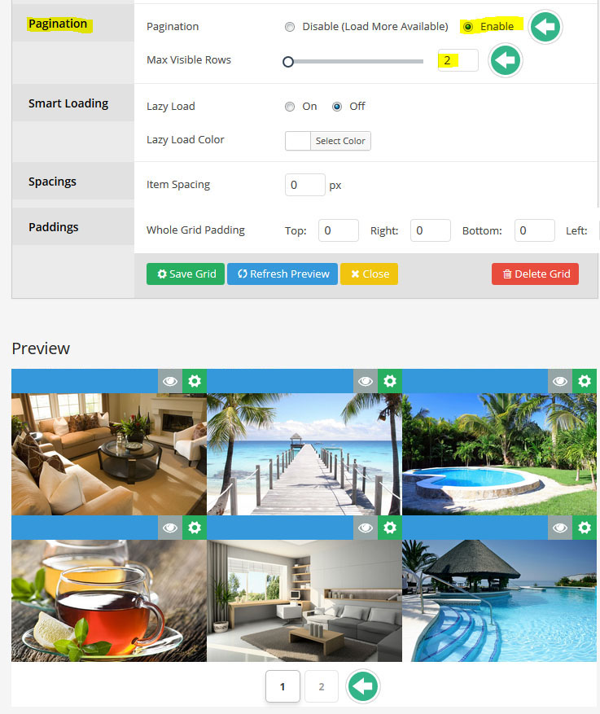
If you've set "Pagination" to "Enable", but aren't seeing any Pagination numbered buttons in your preview, it means they need to be added to your "Navigation Skin" (Essential Grid Settings -> Navigation -> Navigation Layout). Setting up your "Navigation Skin" is covered in more detail here.
When choosing your "Pagination" option, you'll see there are different options for the "Smart Loading" section for when Pagination is enabled and when it's disabled. When it's enabled, you'll have the option of "Lazy Loading" your additional images when the Pagination buttons are used to click over to a new set of items:
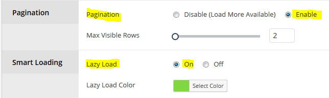
"Lazy Load" basically means that the additional Pagination items that aren't immediately visible on the page are loaded "on-demand". This option is quite useful when your Grid has a large amount of items, and you don't want your web page to load as fast as possible when a user first visits your web page.
Choose "Off" for "Lazy Load" if you'd rather load all your item's images as soon as the page loads. This is usually a good option when you don't have a lot of items, and want the pagination transition to happen as seamlessly as possible (the images will essentially be "preloaded", meaning they'll appear instantly when the Pagination buttons are clicked).
Lastly, if you're using the "Lazy Load" option, the "Lazy Load Color" will represent the placeholder color that will be shown until the image is loaded on-demand. When you click the "Select Color" button, you can choose a color from the color wheel, or enter a hex color manually into the text field as shown in the following screenshot:
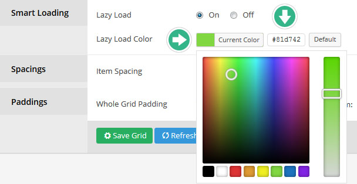
Pagination -> Disable
If you don't want to use Pagination for your grid, when its set to "Disable", you'll see a different set of options for the "Smart Loading". In this section, you'll have the option to use a "More" button, or an "Infinite Scroll" (where items will load when the user scrolls the page).
When either the "More" or "Infinite Scroll" options are used, you'll also see the options "Nr. of Items Start" and "Nr. of Items More". Use these options for setting how many items you want to load initially, and how many items you want to load each time the "More" button is clicked.
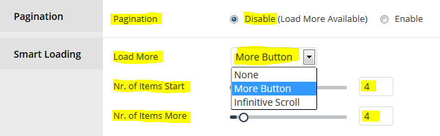
These options won't show up in your back-end preview, but here's an example of what the above settings would look like on the font-end:
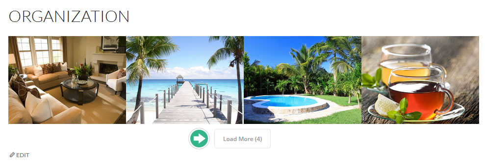
Lastly, if you just want to show all your available grid items no matter what, set the "Pagination" to "Disable", and the "Smart Loading -> Load More" option to "None".
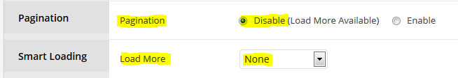
Spacings and Paddings
The "Item Spacing" will represent the space between the items themselves, and the "Padding" values will represent the space between the Grid itself and its immediate HTML parent element. Here's an example:
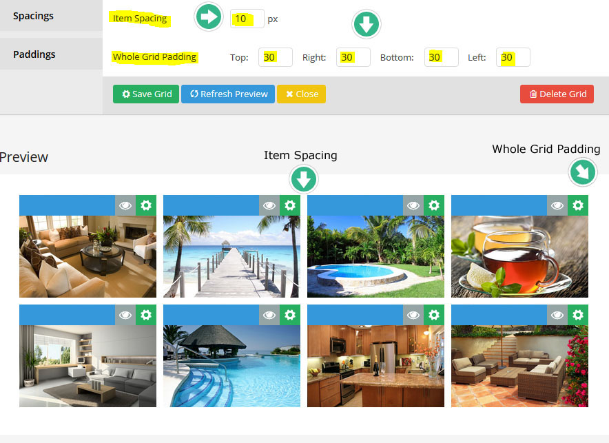
Navigation Settings
The "Navigations" section contains the options for building custom buttonsand other navigation elements that will appear in your Grid.
Navigation Layout
The first section, "Navigation Layout", is a WYSIWYG editor for setting up your custom navigation controls:
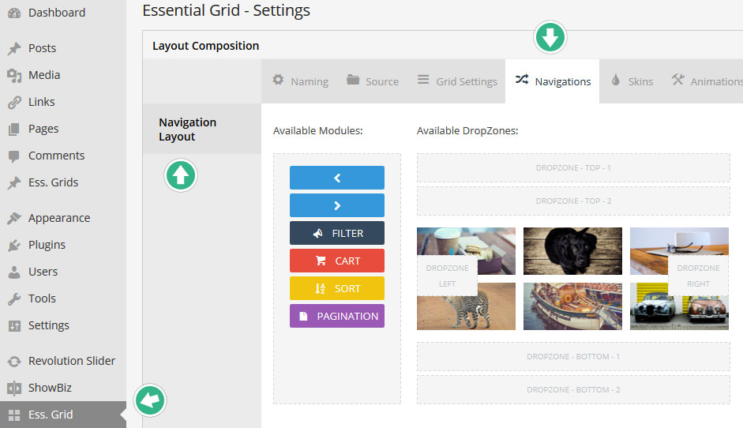
Here you'll see two sections:
Available Modules - The buttons/controls that can be added to one of the "Available DropZones".
Available DropZones - The sections available for adding an "Available Module".
To add an "Available Module" to a "DropZone", drag the click and drag the button with your mouse into the "DropZone":
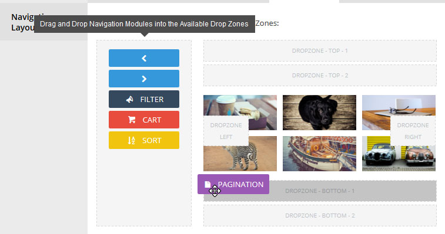
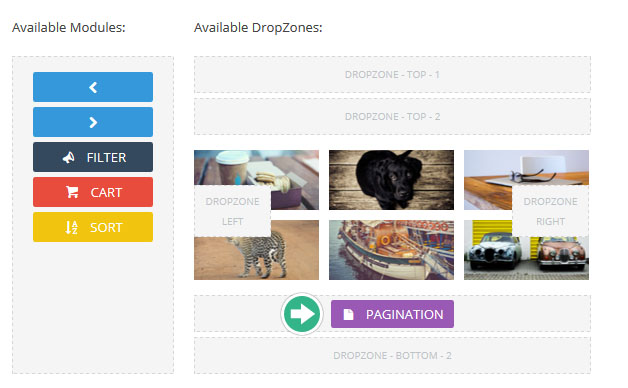
As you can see, there are 6 "Available Modules", and 6 "Available DropZones". But you can add multiple modules to the same DropZone. In the screenshot below, I've added both the "left" and "right" arrows to "DropZone Top 2":
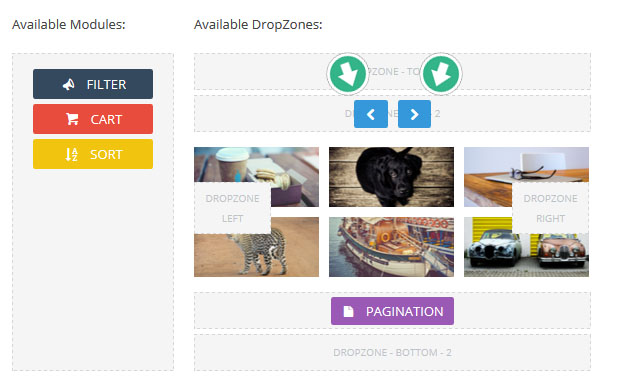
Let's go ahead and all the modules to the DropZones, and then click "Refresh Preview" to see an example of how these elements will look when added to our actual Grid:
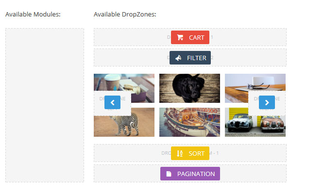
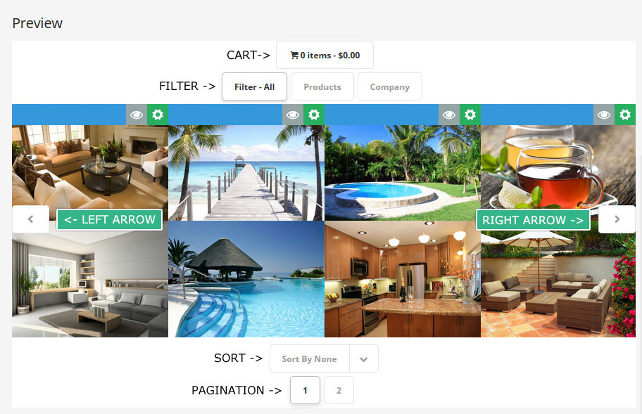
Drop Zones Layout
Now that we've added our buttons and controls to the Grid, we can begin to customize their positioning. For demonstration purposes, I've moved the "Cart" module back to the left column, and set the Navigation WSYIWYG to the following:
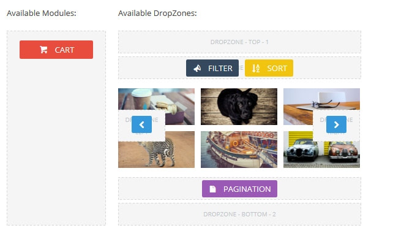
Next, I applied the following settings to the "Drop Zone Layout":
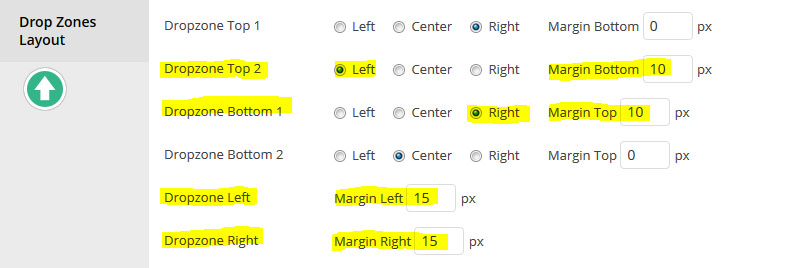
.. then clicked "Refresh Preview", and here's what our updated Grid looks like:
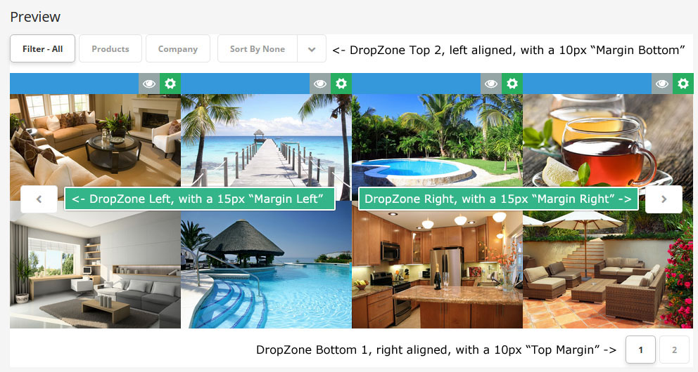
Module Spaces
The "Module Spaces" option is for when you have two or more "Available Modules" placed in the same "DropZone". In our example, this applies to our "DropZone Top 2", where we have both the "Filter" and "Sort" modules placed next to each other. So if we apply a "35" value to the "Module Spacing" field:
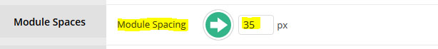
.. and then clicked "Refresh Preview", we'd see a 35px space between our "Filter" and "Sort" modules:
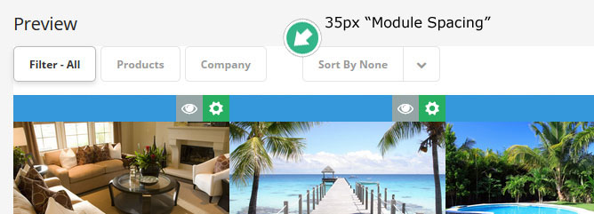
Filtering
The "Filter" module allows us to filter the Grid based on the "Category" set for each of our item's posts:
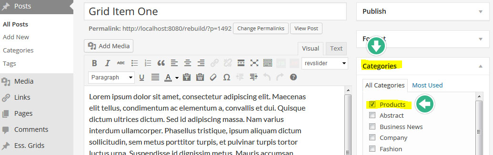
The "Filtering" section is for customizaing the "Filter" module's behaviour. If the "Filter" module is used in our navigation setup, here you can change the "Filter- All" button text, and you can also set the "Filter Type", which has the following two options:
Single - Choose this for traditional "buttons", where only one category can be selected at a time.
Multiple - Choose this if you'd like the ability to select multiple categories at the same time.
In our example so far, we've been seeing the default "Filter Type" setting which is "Single". Let's take a look at how our Grid looks with the "Filter Type" set to "Multiple":
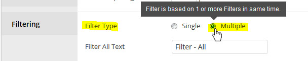
.. then after clicking "Refresh Preview", here's what our new Filter buttons look like:
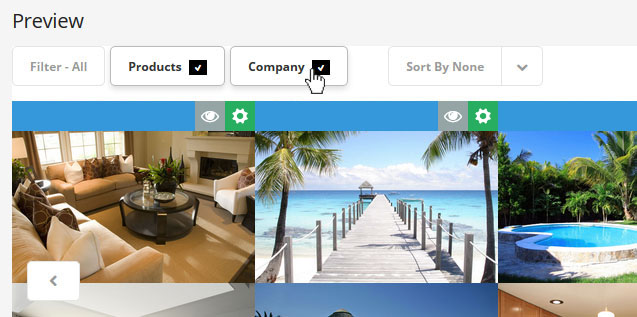
Sorting
The "Sorting" section is for customizing the "Sort" module's drop-down list. Here you can choose what sorting options you want to include by using "Ctrl-Select" for each "Available Sortings" option:
Once you've chosen the items you wish to include, click "Refresh Preview", and you'll see them listed in your Grid's "Sort" module.
Note: Clicking "Sort by Title" will activate the drop-down list. Clicking the arrow will toggle "Ascending/Descending" order.
Lastly, the "Start Sorting By" option is for what sorting option should be used when the Grid first loads, and the "Sorting Order" options are "Ascending" and "Descending", which will determine the order in which the items are sorted. For example, if you were to "Sort by Title", with an "Ascending" sorting order, the items would be sorted from "A-Z", and "Descending" would be would be "Z-A".
Skin Settings
The Skin Editor consists of 3 parts:
Background - The main background color of your Grid
Navigation - The CSS skin used for your navigation elements
Item Skins - The layout used for the individual Grid items (30 different choices!)
Background
Here you can set the main background color for your Grid. Use the color picker, or you can also enter a hex color manually into the text field.
Choose "Default" for no background color (transparent).
Navigation
The "Navigation" section is for editing the different skins available for your Grid's navigation:
We've been using the "Minimal Light" skin in the documentation so far, but let's take a look at what the different default skins look like (For better contrast betwen colors, I've adjusted the Grid's "background-color" in some of the examples).
The CSS for any of the above skins can be edited by selecting the skin from the drop down, and then clicking the "Edit Skin" button:
You can also create a new custom Skin. This is a great option in case you want to modify a skin, but at the same time, preserve the original default skin for later usage.
After clicking the "Ok" button, you'll see a popup of a CSS template where you can edit the CSS for your new custom skin:
Click the "Save" button, and then you'll see the new skin in the drop-down list:
You may have noticed the the default template used when creating your custom skin was "Flat Light Buttons". If you want to use another template for your custom skin, just choose it from the drop down, click "Edit Skin", copy its entire CSS, and then replace the CSS in your new custom skin with the CSS from the other template.
If you've created a custom skin but no longer need it, you can delete it from the drop down list by clicking the "Delete Skin" button:
You'll then see a popup alert asking you to confirm your choice. The message in the popup explains that this is a GLOBAL change, and if you proceed to delete the skin, it will no longer be available for ANY other Essential Grids you may have previously created (so always delete with caution!)
Item Skins
There are 30 pre-built "Item Skins" that you can choose from. An item with a blue toolbar equals an "unselected" skin. The item with a green toolbar is your currently selected skin:
Use the pagination to view all 30 skins. Skins have a preset default view, and a preset "hover" view. Hover your mouse over each skin to preview the item's "hover" view.
You can also filter the skin view using the filter buttons, directly above the pagination:
The filter buttons are:
Filter - All: View all skins
Selected Skin: View only the currently selected skin
Favorites: Filter skins you've designated as a "Favorite" inside the Item Skin Editor.
Masonry: View the skins that have a "Masonry" layout (where the items' height will often vary)
Even: View skins where each item is meant to be evenly aligned (same width & height, symmetrical view)
Once you've chosen a default "Item Skin", it can be customized inside the Item Skin Editor.
Main Animations
The "Animations" section of the "Grid Item Settings" is where you can customize the main animation for the Grid itself. This includes when the Grid first loads into the page, or when the Grid is "Filtered" bt using one of the category filters or with pagination.
Grid Animations -> Start And Filter Animations
Choose from one of the 11 available "animation" types:
Grid Animations -> Animation Speed
Set a speed for your chosen animation (in milliseconds)
Grid Animations -> Animation Delay
Use this option for creating a "delay" between the items themselves when they animate in. For example, if you have a Grid with a large amount of items, animating them all at the same exact time will decrease the animation performance. So for a Grid with a large amount of items, increasing this number will effectively "space out" the item animations, which will result in increased animation performance (animations will appear smoother).
Hover Animations -> Hover Animation Delay:
This setting will add a "delay" to your hover animations:
Lightbox Settings
In this section, you can choose the default media source you wish to open inside the lightbox, as well as several other custom settings for the lightbox itself.
Shown Media Orders -> Set Source Order
Lightbox Gallery -> Gallery Mode
Options for this are:
Single Mode: Open only that item inside the lightbox
All Items: Show a mini-gallery showing all items from your Grid
Filter based all Pages: Show a mini-gallery based on your Grid's pagination
Filter based current Page: Show a mini-gallery based on the currently selected pagination page only
Lightbox Layout
In this section, you have the option to display a title for the item shown in the lightbox, and can also choose to use social buttons such as Facebook and Twitter:
Lightbox Spacing
In this section, you can set the padding for both the title (is used) and media content. Padding values are based on pixels.
Effects
The "Effects" section is where you can choose the animation settings for when the lightbox opens and closes, and also when the lightbox navigates to a new item:
Navigation
In the "Navigation" section, you can choose to use "Navigation Arrows" and also choose to show optional "Mini Thumbnails" (both options only apply to when the lightbox has more than one item).
In addition, you can also set the desired width and height for your thumbnails (in pixels).
Video / Spinner
Video
The "Video" section in the Essential Grid Settings is where you can set where your video's "poster" content is pulled from, and in what order.
Spinner
The "Spinner" section in the Essential Grid Settings is where you can set the main preloader for your Eseential Grid. Here you can also choose to "Hide Markups before load", which will eseentially hide all navitation elements until the Grid Items have loaded.
Item Skin Editor
The "Item Skin Editor" is where you can customize any of the 30 available item skins. At the top of each skin, you'll see a toolbar which will allow you to "Favorite" a skin for easier preview filtering, duplicate any given skin, delete a skin, and lastly, customize the skin's content, layout and styles.
When you "Favorite" a skin, it will begin to show up in the "Favorites" preview filter. Once you "Favorite" a skin, the star symbol in the toolbar will show up as a solid color. And once "favorited", selecting the "Favorite" filter button will now show the list of skin's you've marked as "Favorite".
The "duplicate" option is a good option for preserving the original skin in case wish to use it later. That way you can make edits to the duplicated skin, while leaving the original intact in case you wish to use the original later, or in case you make a mistake editing and wish to start over.
If you choose to "duplicate" a skin, it will be titled "Item Skin 1", and will show up last in the list of skins. Use the pagination to navigate to your new, duplicated skin:
Always "delete" with caution!
If you've duplicated a skin and no longer wish to use it, you can click the "delete" icon in the item's toolbar. Just keep in mind that this is a GLOBAL change, meaning the skin will no longer be available for any of your Grid's you may have previously created.
Once we've decided which skin we wish to use, we can customize it by clicking the green cog icon:
Then we'll be taken to the item's individual skin editor:
Now that we're on the individual Item Skin editor, you'll see a small tollbar fixed to the right side of the screen. Let's quickly review the buttons in this toolbar:
At the beginning of the page, you'll see that you can rename the skin for easier reference. The name of the skin will always be used for the "prefix" applied to the skin's CSS class rules. So in the following example:
.. the "Class Prefix" is now based on our item's skins' new name: "My Custom Item Skin". So if we wanted to add some custom CSS for the skin into the "Global Custom CSS" box (button shown in screenshot above), we can now use the "prefix" for the element we want to target, making it so the CSS is only applied to the current skin being edited. Here's an example:
The individual Item Skin Editor consists of 4 main sections:
Item Layout: WYSIWYG/Preview of your current item skin
Available Layers: Pre-built text styles, icons and buttons that can be inserted into the "Item Layout"
Layout Composition: General look and positioning of elements
Layer Settings: Set custom styles the individual item elements
Now that we've reviewed the page, let's start editing our skin! Once you begin to make edits, the "Item Layout" section will begin to reflect your custom settings.
Item Layout
The "Item Layout" section is the WYSIWYG preview for your Item Skin. As you make changes to the skin using the other sections of the Item Skin Editor, you'll see them reflected in the "Item Layout" section.
Inside the "Item Layout" section, we can add/remove items, and then click and drag them around the preview canvas for proper placement. Here's a quick overview of the "Item Layout" section:
From the above screenshot:
Button to "Play" the hover animation in real-time. This option is particularly useful when customizing your Item Skin's animation settings.
3D view of your Grid Item layers. Great for getting a better visualization of the Grid Item's layers.
Button to hide preview architechture. Provides a more authentic look of what you'll be seeing on the front-end.
Top "Drop Zone". A "fixed" area within the Grid Item Skin. Anything "dropped" here will be automatically positioned at the top.
Facebook icon element. The purple star next to the element means that it's currently the "selected" item in our "Item Layout".
"Line Break" which serves as a separator for content. Content can be dragged and dropped above or below a line break.
Text block based which will display the item's "Post Title".
Bottom "Drop Zone". A "fixed" area within the Grid Item Skin. Anything "dropped" here will be automatically positioned at the bottom.
Clicking any of the elements inside the "Item Layout" will designated it as the "selected" item. Go ahead and click on the "Layout Settings" tab, and then click an element inside the "Item Layout". After doing so, you'll see the current item selected in the "Layout Settings" will be the same as the element you just selected in the "Item Layout". This allows for quick and easy styling of individual elements.
Let's go ahead and reposition some of our elements, starting by dragging and dropping the "Post Title" into the top "Drop Zone":
After moving the "Post Title" element, you'll now see we have two "Line Breaks", directly on top of one another. Let's go ahead and remove one of them by selecting one and then clicking the red "Remove" button:
Next, let's replace the "cog wheel" icon with a "Twitter" icon instead. Select the "cog wheel" from the "Item Layout", and then click on the icon graphic shown in the "Layer Settings" to select a new icon:
Next, I went ahead and moved our new Twitter button so it's placed between our Facebook and Link buttons. But we now have some ackward spacing between out Twitter and Link buttons, as shown in the following screenshot:
Let's go ahead and fix that real quick by adding a 10px right-margin to the Twitter icon:
.. and then lets remove the right-margin that was previously applied to our "Link" button, so our 3 buttons are perfectly centered:
Finally, lets add a "Read More" button from our "Available Layers" section to the bottom "Drop Zone" in our "Item Layout":
And to center our new "Read More" button, let's set the element's "Float" to "None", and also give it a 10px bottom-margin for a better appearance:
Finally, let's see how our changes look on the frontend:
Available Layers
The "Available Layers" section is where we can drag and drop elements into our "Item Layout" section:
Here's a description for the listed numbers in the above screenshot:
Drag & Drop "Line Break" element.
Buttons for filtering the available layers
Drag an item here to delete it from the list (this is permanent so delete with caution!)
One of the Drag & Drop elements
Pagination for the "Available Layers". Click the "#2" to see more "Available Layers".
Layout Composition
Layout -> Grid Layout
Choose "Even" if you want your items to all have the exact same height (symmetrical grid).
If "Even" is chosen, you'll see a "Ratio X" and "Ratio Y" option. These options will be used for the content spacing in the "Item Layout":
Choose "Masonry" if you'd like your Grid's items to have a "flexible" height (non-symmetrical Grid).
Layout -> Content
This option is for any content that will be shown outside the image container. For a good example, click the blue "back" button in the top-right-hand toolbar, and let's select the "Coolidge" skin:
Now that we've selected the "Coolidge" skin, we'll see it in the "Item Layout" section. The "content" part of the skin is shown in the following screenshot:
Now we can use the "Content" options to position our content in different ways. The screenshot above has "Bottom Center" selected. Let's take a quick look at what "Top Left" would look like:
You may notice that even though we set the content to be "Top Left", some of the elements are still centered. This is because the elements themselves have a "text-align: center" applied to them. Lets left align these elements.
Hover your mouse over the element named "Post Title", and then left-click your mouse. After doing so, you'll notice a purple star on the same line as the selected element:
This purple star means the "Post Title" has been designated as the "Selected / Editable" element. Now that it's selected, we'll now see it listed in "Layer Settings" dropdown:
Select the arrow toward the right, and this will open up the editor for the "Post Title". Use the options shown in the following screenshot to left-align the text:
Then repeat the process for the "Learn More" link, and here's our updated "Item Layout" with everything now left-aligned:
Click the blue "back" button, and lets see how the "Coolidge" skin looks in our general skins page (I've marked the skin as a "Favorite" for easy filtering view)
And let's take a quick look at how this would look on the front-end of our site:
Cover -> Cover Type
For a good example of this setting, let's switch back to the default "Washington" skin. Then to view the item's "Cover" in action, click the blue "play" button in the "Item Layout" section:
Now let's switch the "Cover Type" to "Content Based". Here's how our preview would look now. Notice the content's background no longer fills the entire area, and only covers the area where the actual hover content is:
Cover -> Background Color
Now let's adjust the cover's background color:
Cover -> Opacity
And lastly, let's adjust the cover's "transparency":
Spaces -> Full Item
In this section, you can designate the item's padding, border, and corresponding colors to give the item a customized "frame" look.
Note: "Paddings", "Border" and "Border Radius" are listed in the usual CSS "shortcut" order of "Top, Right, Bottom, Left".
Here's an example of the above settings on our front-end. To accentuate the "frame", I've given the grid items some spacing (Grid Settings -> Spacings -> Item Spacing -> 5px)
Spaces -> Content
For a good example of this option, I've switched back to the "Coolidge" skin:
In the above screenshot, you'll notice that adjusting the background color of the "content" didn't change the background color of everything. Let's go ahead and fix that by adjusting the individual element styles:
.. and then repeat the process for the "Learn More" hyperlink as well. Now we have a nice solid colored background for our entire content section:
and here's a quick view of our changes on the front-end:
Shadow
The "Use Shadow" options are "Media", "Content" and "Both". For the following example, I've chosen "Both":
Animation
The "Animation" section is where you can customize the hover effect animation for your Grid Items:
Layer Settings
This section is for the individual Grid Item elements. This includes text, icons, buttons and hyperlinks. Essentially all of the elements visible in your "Item Layout" section (right side of screenshot below), will become editable in the "Layer Settings" section.
Before you begin to make your edits, if you want to preseve the element's original settings, you can use the "Save As Template" button to essentially "duplicate" the current element, and then save the duplicated element under a new, unique name:
Layer Settings -> Source
The "Source" dropdown has 3 choices. "Icon", "Post" and "HTML":
When "Icon" is chosen, you'll have the option to change the icon:
Use the "Post" option if you want to pull in post-based content from the post that each item is based on. The screenshot below shows the list of available options:
When "Post" is chosen as the "Source" type, you'll then have the option to limit the post-based content by characters or words:
When "HTML" is chosen as the "Source" type, you'll see a text area box where you can enter custom HTML:
Custom Meta Tags can also be used when "Post" and "HTML are chosen.
Layer Settings -> Style
This section is where you can apply styles such as font and color to the element. If you're styling an icon, adjust the "font-size" to increase or decrease the size of the icon. "Font-Family" is not needed for icons.
Each option in the "Layer Settings" has both an "Idle" and a "Hover" setting. For any given section, click the "Hover" tab to apply specific hover styles for that element.
If you do not wish to apply a hover effect, un-check the "Hover" checkbox and the hover styles will be ignored.
To use the default styles from another element from the "Available Layers" section, drag and drop the layer into the "Drop Style for Change" box:
Layer Settings -> Style -> Spacing
Inside the "Spacing" section, you set custom styles for the elements' CSS position, display, float, clear, margin and padding properties:
Layer Settings -> Style -> Border
In this section, you can customize the available border settings for the element:
Layer Settings -> Style -> BG
Edit the background color of your element, and also the background color's transparency level:
Layer Settings -> Style -> Shadow
Apply a CSS shadow to your element:
Layer Settings -> Show/Hide
In this section, you can choose to hide the layer based on the Grid Item's current width. This option is particularly useful when you want to hide an element on mobile. For example, entering a number such as "640" into the "Hide Under Width" field will hide the element whenever the Grid Item's width falls below 640px.
You can also check the "Hide if Media is Video" box to hide the element if it happens to be a video.
Layer Settings -> Animation
In this section, you can set the custom animation for the individual layer. The "Transition" drop-down has 25 choices. After selecting an option, click the blue "play" button in the "Item Layout" section to see a preview of the animation. You can also set a "delay" for the transition to setup sequenced transitions between your item's elements.
Layer Settings -> Link/SEO
The "Link/SEO" section is where you can hyperlink your elements, and also apply HTML attributes for SEO:
"Link To" options:
None: No hyperlink applied
Post: Link to the post that represents the Grid Item
URL: Link to a custom URL that you enter
Meta: Link to a custom post-meta
JavaScript: Enter JavaScript to execute when the element is clicked
LightBox: Open content in the lightbox when clicked
Play Embedded Video: Play your video content if available
The "Use Tag" option is the HTML element that will be automatically wrapped around your hyperlink. This allows for more flexibility with styling. If you aren't sure what tag is best, or don't plan on utilizing the tag for styling purposes, use the default "div" option.
Layer Settings -> Link/SEO -> Fix: !important
WordPress themes usually apply global styles to HTML hyperlinks, and sometimes this can cause conflicts with custom styles you wish to use for a module such as Essential Grid. When customizing your skin elements, if you find the styles you've selected aren't showing up correctly, check the "Fix: !important" box, and that will apply "!important" declarations to your Grid Item's hyperlink styles. Choosing this option will then override your theme's default hyperlink styles.
Lastly, for SEO purposes, you can enter a title into the "Attribute" field, and also assign a class name and "rel" attribute to the hyperlink:
Thank you
Thank you for purchasing the EXO's Wordpress theme. If you have any issues or feedback please contact us via our Themeforest author page.